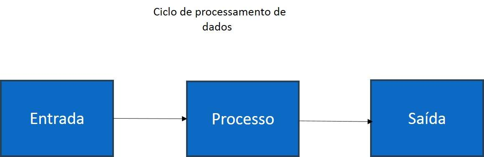

Pilares da Computação
Compreender a base da tecnologia requer o estudo do processamento de dados e da arquitetura dos computadores.

Perguntas Frequentes sobre Conceitos
O que é Hardware e Software?
Hardware refere-se às partes físicas do computador, como processador e memória RAM. Software é a parte lógica, ou seja, os programas e o sistema operacional.
Como funcionam as redes de computadores?
As redes permitem a troca de dados entre dispositivos conectados utilizando protocolos padronizados, como o HTTP e o IP.
Mídia Educativa
Ouça nosso áudio sobre a história dos algoritmos: